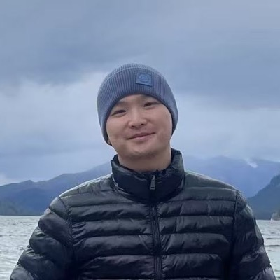

William Hu (Haoqi Hu)
Senior Applied Scientist at Amazon
About
I'm a Senior Applied Scientist at Amazon on the POE-AI team, where I work on large language models for seller-facing applications. That means carrying a model through its whole lifecycle, from continued pretraining and instruction fine-tuning through reinforcement learning and evaluation, and caring about the data recipes feeding it as much as the systems that eventually serve it.
Much of that comes down to distributed training. I've built and run pipelines across most of the common ways of splitting a job over many machines, whether that means plain data parallelism, sharding optimizer state and parameters across ranks, or carving a model up along tensor and pipeline boundaries. In practice that has meant PyTorch DDP and FSDP, DeepSpeed, and Megatron-LM, running on SageMaker HyperPod clusters under Slurm and EKS.
My research circles the same problems from a different angle: what to train on, how to train it, and how to tell whether it worked. That pulls me toward data selection, training methods, evaluation and benchmark design, robustness, and increasingly multimodal models. I publish occasionally, sometimes with academic collaborators. Before Amazon I spent a few years as a deep learning engineer at the Bosch Center for Artificial Intelligence, after an M.S. at Carnegie Mellon and a B.S. at Ohio State.
Away from all of this I follow markets and investing, and I enjoy thinking through startup ideas. I'm a blue belt in Brazilian jiu-jitsu and play more tennis than I probably should. Happy to talk about any of it, so do get in touch.
Publications
-
TangPoetryBench: A Multi-Dimensional Benchmark
and Rubric-Conditioned Evaluator for Poetry-to-Image
Generation
arXiv preprint, 2026
arXiv:2608.11452 · PDF -
LRBench and Judge-R1: Principled Evaluation and
Training of LLM-Based Judges for Long-Context Reasoning
Findings of the Association for Computational Linguistics: ACL 2026
ACL Anthology · PDF -
LipNeXt: Scaling up Lipschitz-based Certified
Robustness to Billion-parameter Models
International Conference on Learning Representations (ICLR), 2026
arXiv:2601.18513 · PDF -
Integrating Unstructured Text into Causal
Inference: Empirical Evidence from Real Data
arXiv preprint, 2026
arXiv:2602.14274 · PDF -
Transferable Adversarial Attacks on Black-Box
Vision-Language Models
IEEE/CVF Conference on Computer Vision and Pattern Recognition (CVPR), 2025
arXiv:2505.01050 · PDF -
ShallowFeat: Simple Handcrafted Features to
Enhance Skeleton-based Action Recognition Without Pain
Preprint
arXiv
Academic Service
Reviewer for IEEE Transactions on Pattern Analysis and Machine Intelligence (TPAMI) in 2026, PLOS ONE in 2024, and the Multimodal Algorithmic Reasoning (MAR) Workshop at CVPR 2024.
Experience
-
Jul 2022 – present
Amazon — product quality and seller AI
Senior Applied Scientist (2025 – present) · Applied Scientist II (2022 – 2025)
Product quality detection from customer feedback, then a seller-facing foundation model: training, evaluation, and production deployment. -
Jan – Jul 2022
Amazon — Alexa proactive experience
Machine Learning Engineer II
Identified machine learning signals to improve Alexa monetization; statistical analysis of contextual signals. -
2020 – 2021
Bosch Center for Artificial Intelligence
Deep Learning Engineer
Deep learning for financial forecasting, autonomous driving, and anomaly detection.
Education
-
2018 – 2019
M.S., School of Computer Science
Carnegie Mellon University -
2015 – 2018
B.S. in Computer Science Engineering
The Ohio State University · Magna Cum Laude